문서 보기는
카톡으로 받은 문서 → 광고 · 가입 없이 보기
→ 펜 · 도장 얹어 다시 보내기
문서는 폰 밖으로 안 나감 · 원본은 안 바뀜
카톡으로 받은 문서 → 광고 · 가입 없이 보기
→ 펜 · 도장 얹어 다시 보내기
문서는 폰 밖으로 안 나감 · 원본은 안 바뀜
📄열 수 있는 문서›
★핵심 기능 한눈에›
1처음 — 설치 · 문서 열기›
2보기 — 확대 · 쪽 · 찾기 · 밤›
3표시 — 펜 · 도형 · 도장›
4내보내기 — 보내기 · 골라 복사›
5현장 — 축척 재기 · 두 판 견주기 · 도면›
6정리 — 고르기 · 묶음 · ⭐ · 전체 찾기›
7문서마다 — 한글 · 엑셀 · 암호 PDF · 급여명세서›
?안 될 때 · 자주 묻는 것›
📄열 수 있는 문서
됨 · 일부 · 안 됨
- 쪽 모양 그대로 · 쪽 목록 · 목차 · 글 찾기🔒 암호 PDF → 암호 넣고 열기 (갤럭시는 안드로이드 15 이상)
- 한글
- HWP · HWPX · 글 · 표 · 그림쪽 모양이 아니라 글 흐름으로 · 글상자 자리는 다를 수 있음
- 워드
- DOCX · DOC글 흐름으로 · 옛 DOC 는 글자 위주
- 엑셀
- XLSX · XLS · 시트마다 · 칸 너비 그대로계산식은 저장된 값으로 · 암호 엑셀은 못 엶
- PPT
- PPTX 장 모양대로 · 「글로」 단추옛 PPT 는 글자만 · 차트 · 스마트아트 빠짐
- 그림
- JPG · PNG · HEIC · GIF · WEBP · BMP
- 도면
- DXF · 레이어 · 길이 재기DWG 는 못 엶 → PDF · DXF 로 받기
- 압축
- ZIP — 풀지 않고 안을 봄 · 옛 방식 암호알집(ALZ · EGG) · 7Z · RAR 못 엶
- HTML
- 글 · 표 · 급여명세서 같은 암호 HTML프로그램이 든 HTML 은 인터넷을 막고 엶
- 글
- TXT
- 영상
- 보기 아님 → 「🎬 영상 → 클로드」 로 보냄
★핵심 기능 한눈에
1처음 — 설치 · 문서 열기
설치 (한 번만)
갤럭시
- 카톡 안내의 …/docview.apk 주소 누름 → 받기 → 설치
- 「출처를 알 수 없는 앱」 → 이 출처 허용 → 뒤로 → 설치
- 「안전하지 않은 앱」 → 자세히 → 그래도 설치
아이폰
- 카톡 안내의 cheaman.github.io/docview 누름 → 사파리로 열림
- ⋯ → 공유 → 홈 화면에 추가 → 추가
- 홈 화면 「문서 보기」 → 완전히 닫고 한 번 더 열기
문서 열기
- 갤럭시 — 카톡에서 문서 누름 → 다른 앱으로 열기 → 문서 보기
- 아이폰 — 카톡 문서 → 공유 → 파일에 저장 → 앱 파일 열기 → 고름
- 한 번 연 문서는 첫 화면 목록에 남음 → 다음엔 목록에서 바로
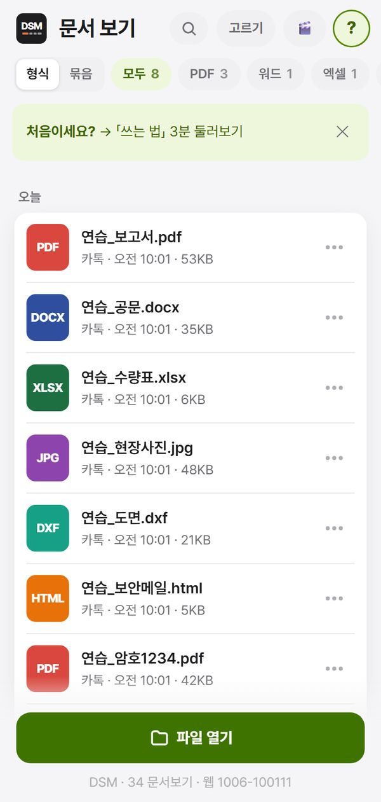
2보기 — 확대 · 쪽 · 찾기 · 밤
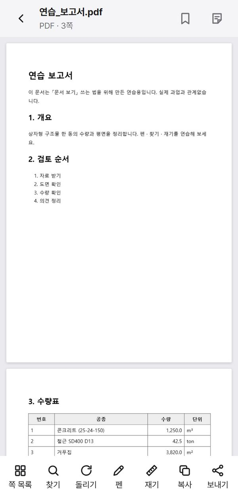
- 확대 — 두 손가락으로 벌리기 · 두 번 톡 = 크게 ↔ 원래
- 한글 · 워드 · 엑셀 — 두 손가락으로 벌리면 글씨가 커짐 · 「글씨」 단추로도
- 쪽 목록 — 쪽 그림을 보고 톡 → 그 쪽으로 · 칩 「🔖 · 목차 · 표시」
- 돌리기 — 단추 · 두 손가락 비틀기
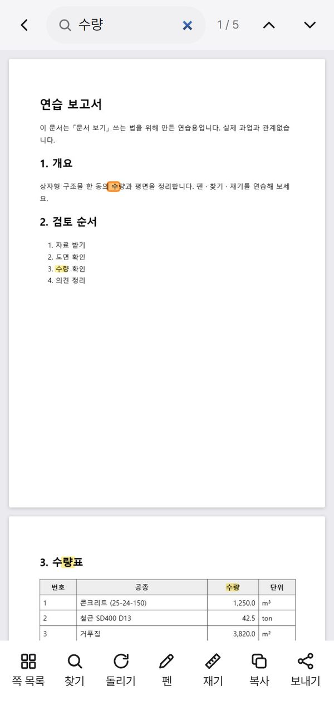
저절로 되는 것다시 열면 보던 쪽 · 확대 그대로 · 밤(해 진 뒤)엔 바탕이 어두워짐 → 머리 🌙 로 이 문서만 끄기 · 보는 동안 화면 안 꺼짐
🔖 책갈피 · ⭐ 즐겨찾기
- 문서 머리 🔖 → 이 쪽에 책갈피 · 쪽 목록 「🔖」 칩으로 모아 보기
- 목록에서 길게 눌러 고르기 → ⭐ 즐겨찾기 → 목록 맨 위에 고정
3표시 — 펜 · 도형 · 도장
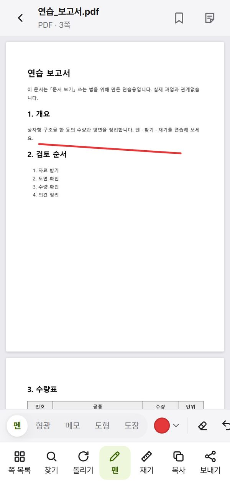
- 아래 줄 펜 → 위에 펜 판
- 펜 한 손가락 긋기 · 형광 곧게 펴짐 · 두 손가락은 밀기
- 메모 → 톡한 자리에 번호 메모
- 되돌리기 ↶ · 지우개
도형 · 글
- 펜 판 도형 → 화살표 · 네모 · 동그라미 · 글
- 끌어 그림 → 반듯하게 · 그린 것 톡 = 고르기 → 끌어 옮김 · 끝 동그라미 = 크기
도장 · 서명
- 펜 판 도장 → 「검토필」 등 고름 → 찍을 곳 톡
- 처음 한 번 이름을 물어봄 (이 폰에만 저장) · ＋ 에서 도장 글 · 손 서명
원본은 안 바뀜표시는 따로 저장 → 보낼 때만 사본에 입힘 · 도장은 보기 표시 (전자서명 아님)
4내보내기 — 보내기 · 골라 복사
⇪ 보내기
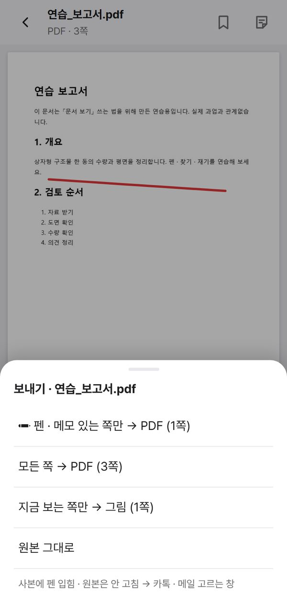
- 아래 줄 보내기 → 무엇을 보낼지 고름
- 카톡 · 메일 고르는 창 → 보낼 곳
✂️ 골라 복사
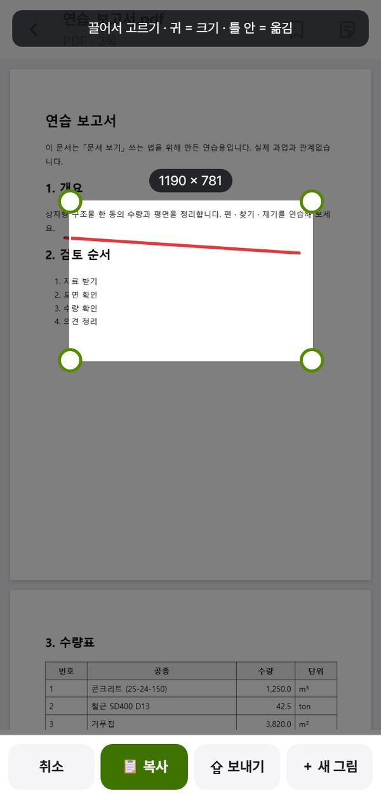
- 아래 줄 복사 → 틀 뜸
- 필요한 곳을 손가락으로 그림
- 📋 복사 → 카톡 입력칸 길게 → 붙여넣기 · 또는 ⇪ 보내기 그림 파일
📄 사진 여러 장 → PDF 한 권
- 목록에서 사진을 길게 눌러 고르기 → 여러 장 톡
- 아래 📄 PDF 로 → 차례 끌어 바꿈 → 만들기
5현장 — 축척 재기 · 두 판 견주기 · 도면
📏 축척 재기
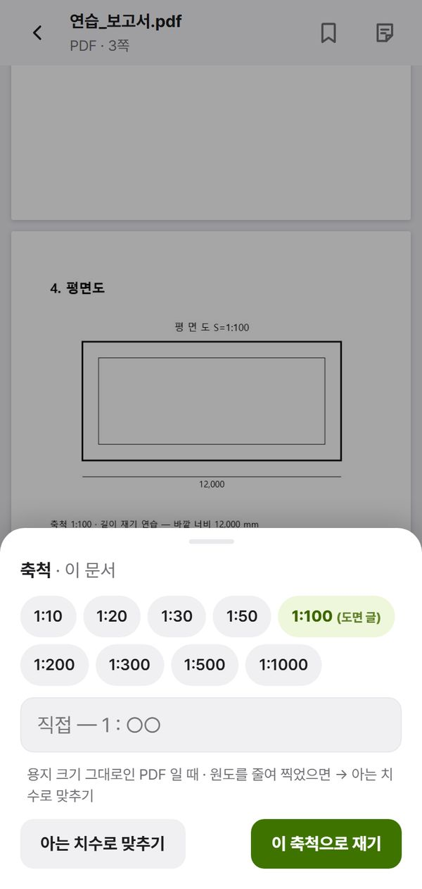
- PDF · 그림에서 아래 줄 재기 → 축척 고름 (또는 「아는 치수로 맞추기」)
- 두 점 톡 → 실제 길이
- 남기기 → 펜 표시로 남음
⇄ 두 판 견주기
- 목록에서 PDF · PPT 둘을 길게 눌러 고르기
- 아래 ⇄ 견주기 → 같음 검정 · 앞에만 빨강 · 뒤에만 파랑
- ⌃⌄ 달라진 쪽만 옮겨 다님
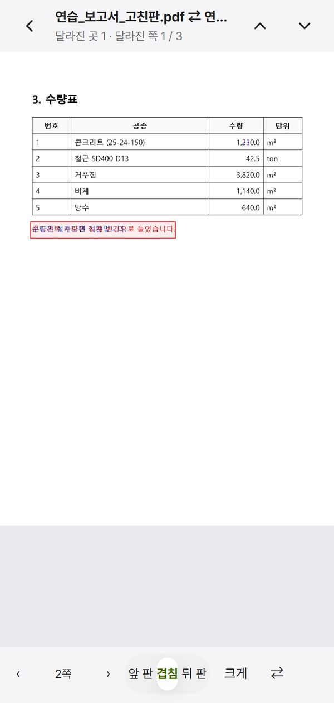
도면 (DXF)
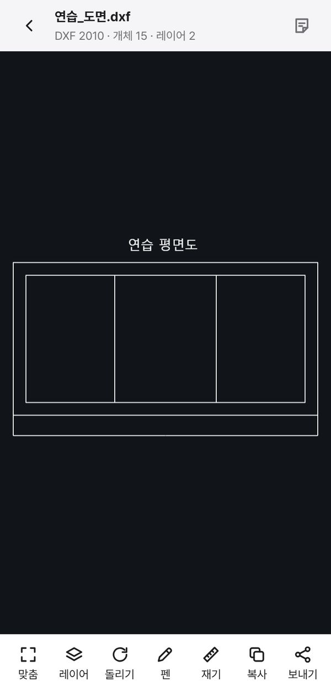
6정리 — 고르기 · 묶음 · ⭐ · 전체 찾기
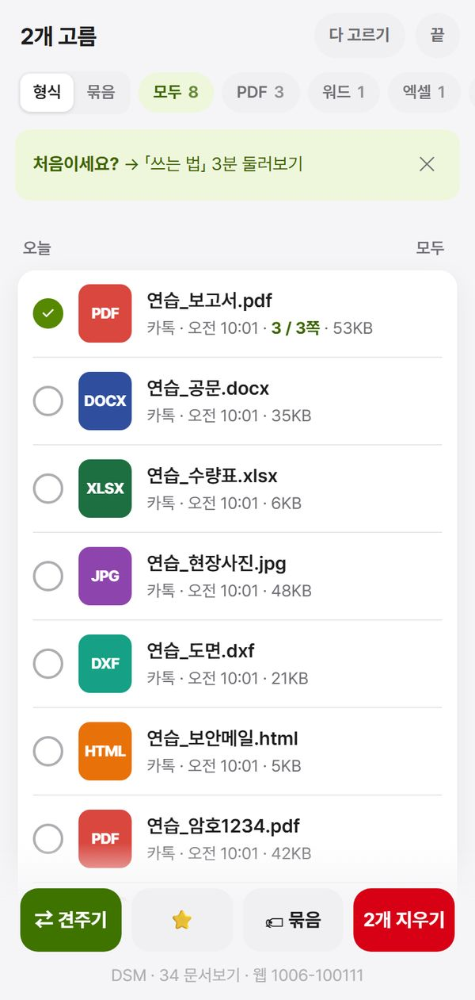
- 머리 고르기 · 또는 목록 줄 길게 누름 → 동그라미를 문질러 여러 개
- 아래 줄 → ⭐ 즐겨찾기 · 🏷 묶음 · 지우기 (원본은 그대로 · 앱 안 사본만)
- 머리 칩 → PDF · 한글 · 엑셀 … 형식별로 · 「묶음」 = 과업별 이름표
⌕ 전체 찾기
- 첫 화면 머리 ⌕ → 「이름에서」 · 「문서 속에서」
- 찾은 줄 톡 → 그 문서 · 그 쪽으로
7문서마다
한글 · 워드 — 글씨 크게
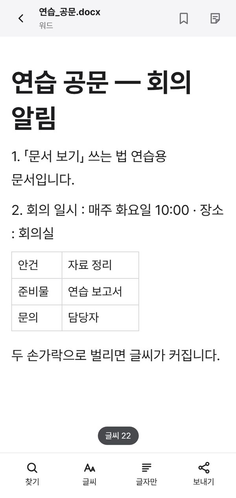
- 두 손가락으로 벌리면 커짐 · 오므리면 작아짐
- 「글씨」 단추 → 크기 · 줄 간격 · 글꼴 · 바탕
- 모양이 어긋나면 「글자만」 → 글만 깔끔히
엑셀 — 컴퓨터 화면처럼
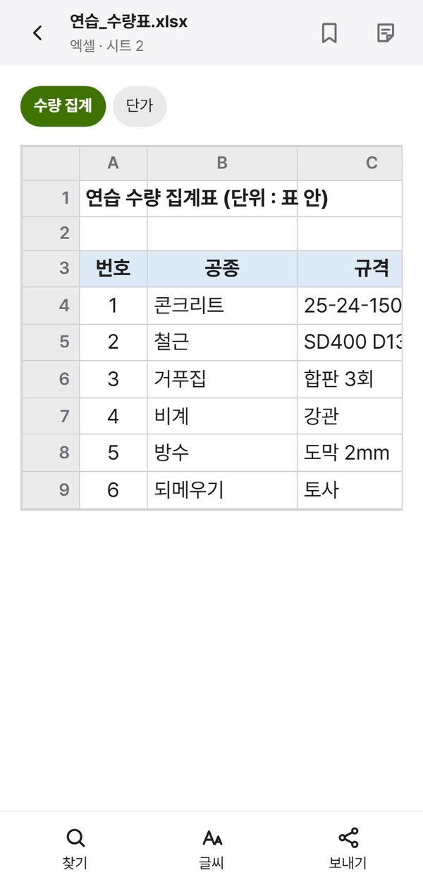
- 위 칩 = 시트 · 표 안에서 위아래 · 옆으로 밀기
- 두 손가락으로 오므리면 더 많은 칸이 보임
🔒 암호 PDF
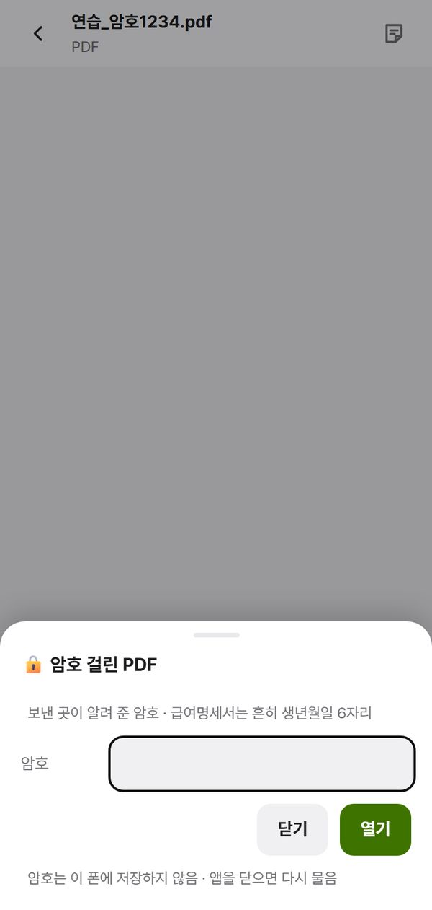
- 암호 걸린 PDF 를 열면 암호 칸이 뜸 → 넣고 열기
- 암호는 폰에 저장 안 함 → 앱을 닫으면 다시 물음
갤럭시 안드로이드 14 이하암호 PDF 는 아직 못 엶 → 설정 › 휴대전화 정보 › 소프트웨어 정보 에서 판 확인
급여명세서 같은 암호 HTML
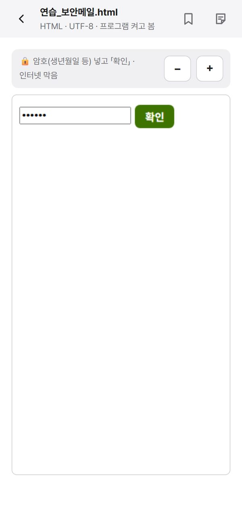
- 그 파일을 열면 앱 안 막힌 칸에서 엶 (인터넷 막음)
- 생년월일 등 넣고 확인
- 글씨가 작으면 위 띠 ＋
ZIP
- 풀지 않고 눌러서 안의 파일을 바로 봄 · 뒤로 = 한 칸씩
- 꺼낸 파일은 목록에 「압축 · ZIP 이름」 으로 남음
?안 될 때 · 자주 묻는 것
카톡에서 「다른 앱으로 열기」 에 문서 보기가 없음
카톡 → 파일 길게 → ⋮ → 다른 앱으로 열기 · 처음 한 번 「항상」 말고 「한 번만」
카톡 → 파일 길게 → ⋮ → 다른 앱으로 열기 · 처음 한 번 「항상」 말고 「한 번만」
표시 · 목록이 사라짐
앱을 지우면 앱 안 문서 · 표시도 지워짐 → 새 판은 지우지 말고 덮어 설치
앱을 지우면 앱 안 문서 · 표시도 지워짐 → 새 판은 지우지 말고 덮어 설치
붙여넣기가 안 됨
붙여넣는 앱마다 다름 → 「⇪ 보내기」 로 그림 파일
붙여넣는 앱마다 다름 → 「⇪ 보내기」 로 그림 파일
한글 모양이 원본과 다름
글 흐름으로 보여 줌 (쪽 모양 아님) → 쪽 모양이 꼭 필요하면 PDF 로 받기
글 흐름으로 보여 줌 (쪽 모양 아님) → 쪽 모양이 꼭 필요하면 PDF 로 받기
그래도 안 되면
화면을 찍어 나눠 준 분에게 카톡 — 어떤 문서 · 갤럭시/아이폰 한 줄 같이
화면을 찍어 나눠 준 분에게 카톡 — 어떤 문서 · 갤럭시/아이폰 한 줄 같이
DSM · 34 문서보기 · 쓰는 법